Notation
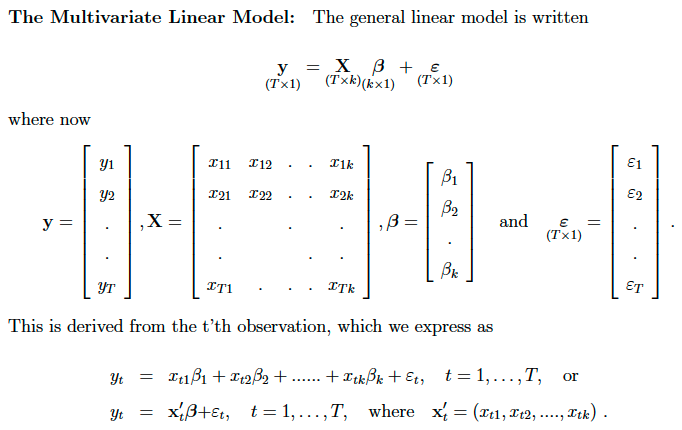
Assumptions/regularity conditions
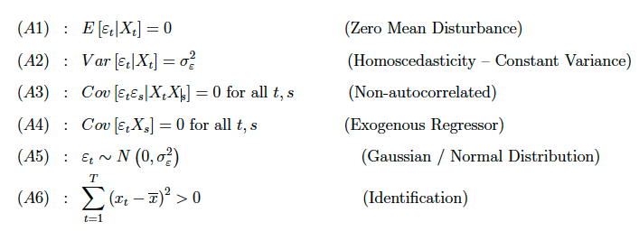
Useful matrix algebra identity
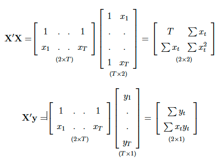
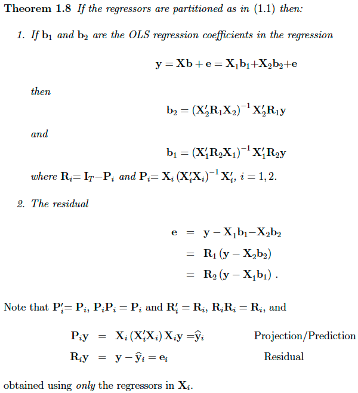
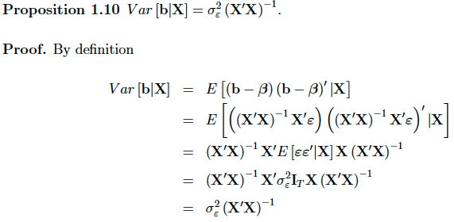
Proof of variance of residuals
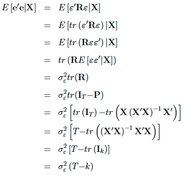
The very basic case
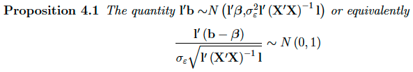
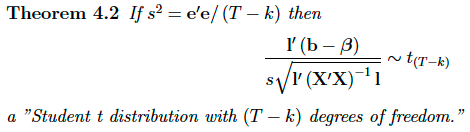
More generally
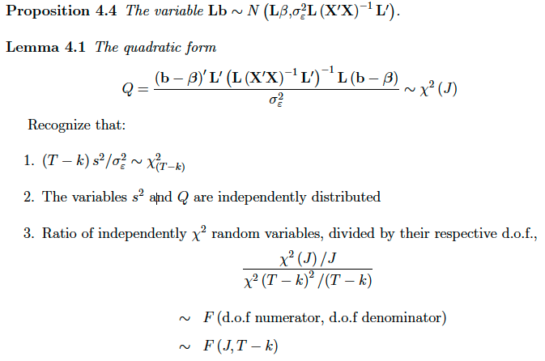
Restricted Least Squares (Lagrange Approach)
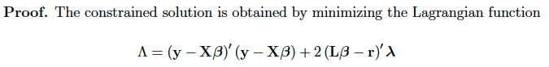
Note the choice of choosing the lagrange multiplier to has a constant in front to simplify things!
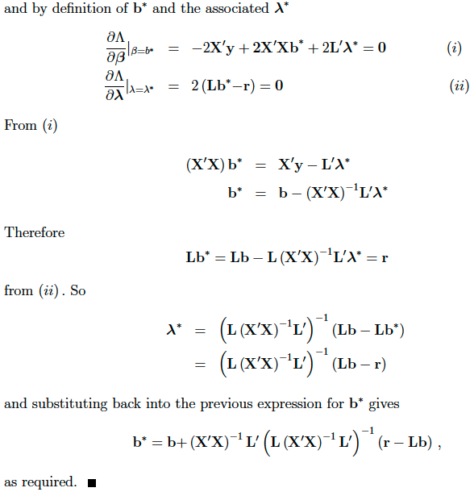
Normal derivation
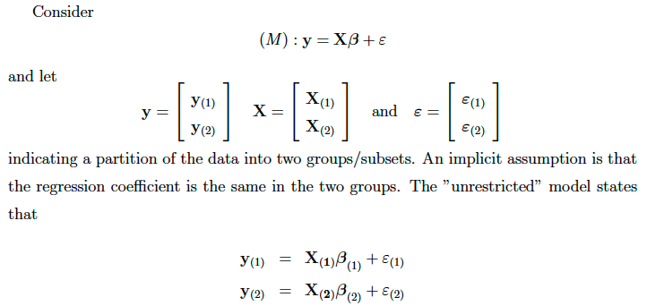
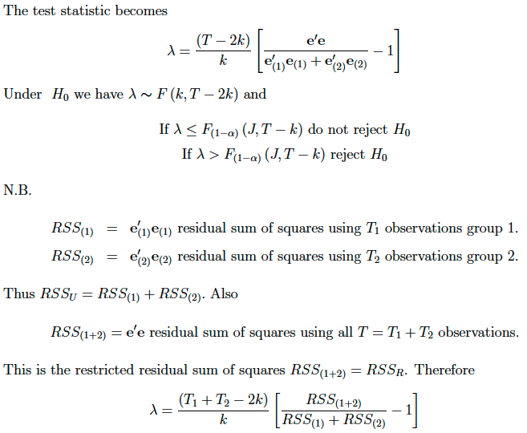
Alternative derivation when one of the sub samples has less observations than regressors:
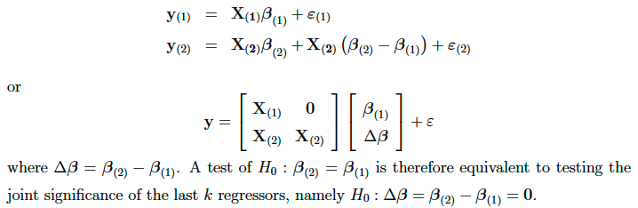
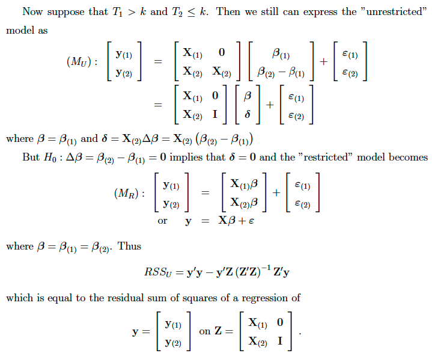
This is an F test with (T - T2 - k) = (T1 - k) dof and T2 indicator variables (restrictions).
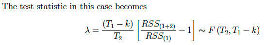
KL divergence. Note that the relative orders of the thetas are reversed in the fraction.
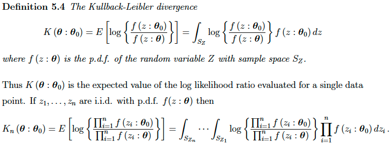
This proof is straightforward, but tedious. Focus on a case of n = 2. Just expand out the multiplication, etc.
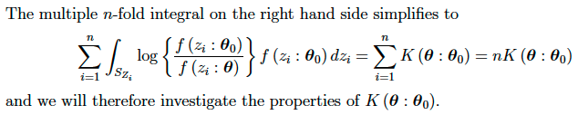
Remember that log(x) is concave, and -log(x) is convex.
The support function is the loglikelihood
The score is the 1st derivative of the loglikelihood
The hessian is the 2nd derivative of the loglikelihood
The fisher information is the expected value of the outer product of the score
Under certain conditions, the fisher information is also negative expected value of the hessian
MLE estimator itself exists.
In practical terms, need to check that:
Alternatively, use the second derivative directly:
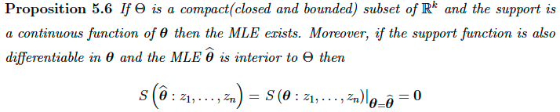
If the parameter space is convex, and loglik is concave (negative 2nd derivative), then the MLE exists and is unique (note that uniqueness impliex existence).
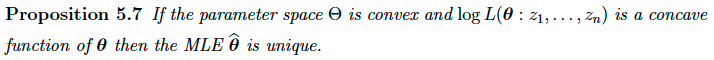
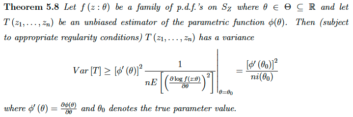
Easy way to check that some unbiased estimator reaches the CRLB.
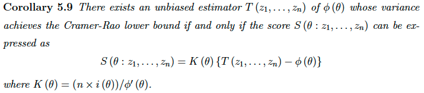
Practically, in the case of MLE, K(theta) can actually be any arbitrary function of theta, as noted by Casella and Berger, pg 364.
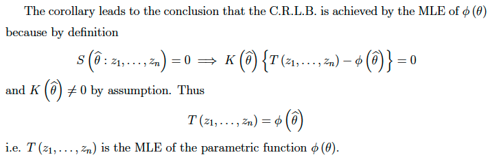
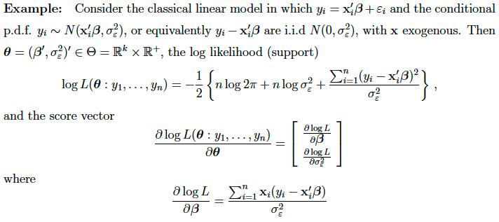
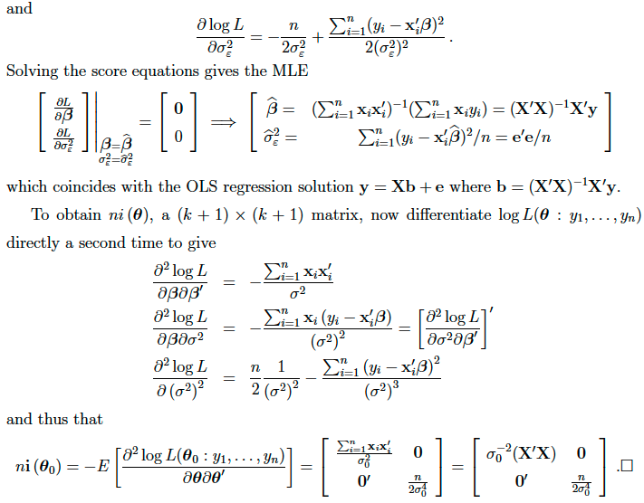
General distribution of MLE:
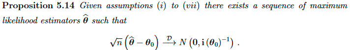
Note that the information matrix relies on true theta0, so instead use i(theta hat) as a consistent estimator for it.
Restrictions are denoted
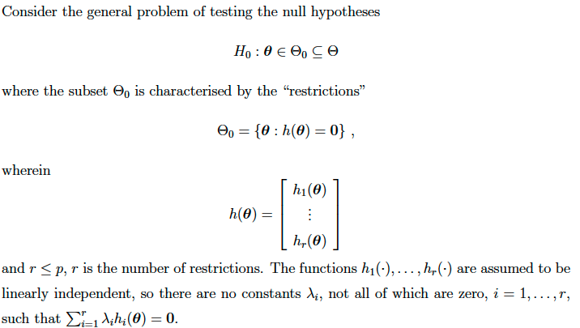
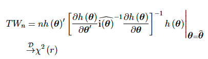
Proof: 1st order Taylor Expand h(theta hat) about true theta 0
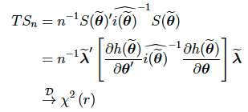
The proof in the notes has typos.
The easiest one!
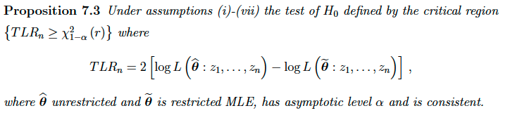
Proof is harder, requires 2nd order Taylor Series expansion.
Note that Method of Moments is too easy and skipped (not too exciting).
There are p parameters, and k moment conditions
The true moment conditions are denoted by h, s.t. E(h) = 0
The sample moment conditions are denoted by m, whose sample (empirical) means correspond to E(h)
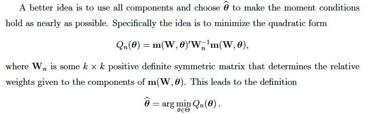
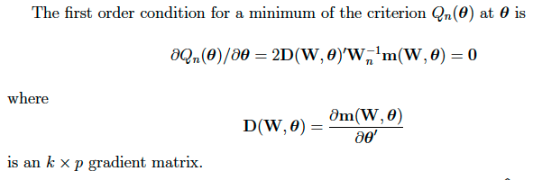
GMM is identified if:
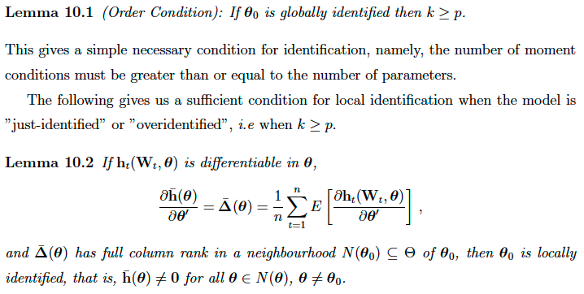
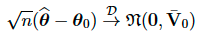
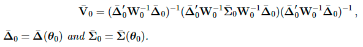
The proof is a straightforward, by tedious Taylor Series expansion about m(theta hat)
Relative Efficiency
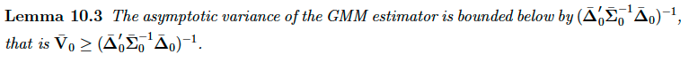
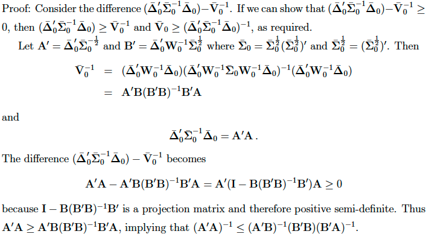
A an efficient weighting matrix needs to chosen up to a proportionality:
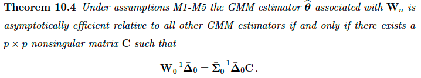
In practice, is it easier to directly work out the variance of the moment conditions and get the standard efficient weighting matrix.
However, the previous result is useful, as this allows us to be sloppy with constants (e.g. missing Ts).
Worked example
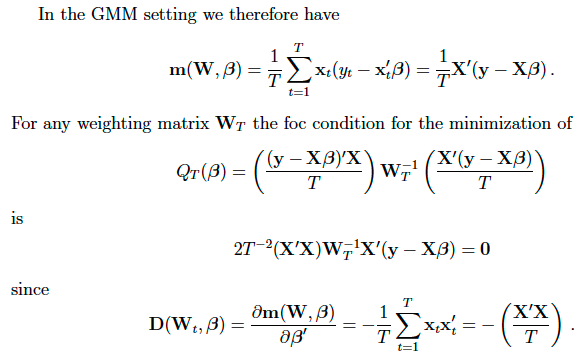
Worked Example. Note that sometimes Don is sloppy and specifies different T proportionalities.
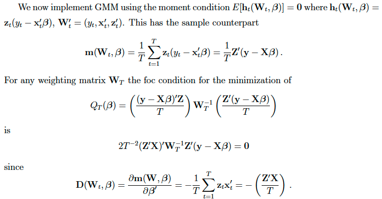
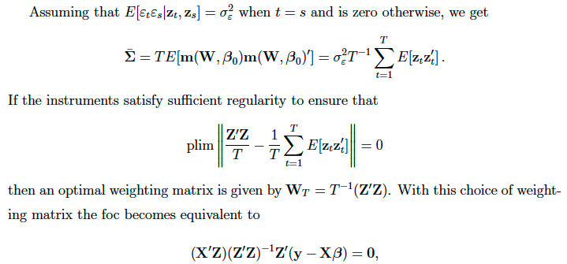
Worked Example
A truncated distribution is where any observations exceeding some threshold are not observed at all.
A censored distribution is where any observations exceeding some threshold are simply recorded as that threshold, but its actual value is unknown (censored).